Khí Sau Phúc Mạc
I. Đại cương
– Tràn khí sau phúc mạc (Pneumoretroperitoneum) là tình trạng tích tụ khí bất thường trong khoang sau phúc mạc (nằm giữa phúc mạc thành sau và mạc ngang), có thể giới hạn trong từng tiểu khoang hoặc lan rộng giữa các khoang giải phẫu.
– Căn nguyên: Khí xâm nhập vào khoang sau phúc mạc qua các con đường giải phẫu hoặc sinh tại chỗ:
+ Thủng tạng rỗng sau phúc mạc hoặc ngoài phúc mạc: vỡ tá tràng đoạn D2–D4 do loét hoặc chấn thương bụng kín, thủng đại tràng lên, đại tràng xuống hoặc trực tràng ngoài phúc mạc do u, viêm túi thừa hay dị vật.
+ Thủ thuật nội soi và can thiệp: thủng sau nội soi mật tụy ngược dòng (ERCP) kèm cắt cơ vòng Oddi, nội soi đại trực tràng, sinh thiết qua da, đốt sóng cao tần hoặc dẫn lưu khoang sau phúc mạc.
+ Phẫu thuật vùng sau phúc mạc: phẫu thuật hệ tiết niệu, tuyến thượng thận, đại trực tràng hoặc phẫu thuật cột sống thắt lưng theo đường tiếp cận phía trước.
+ Nhiễm trùng sinh hơi tại chỗ: viêm tụy cấp hoại tử nhiễm trùng, viêm thận bể thận sinh hơi, áp xe thận hoặc áp xe cơ thắt lưng chậu do vi khuẩn sinh khí.
+ Khí từ khoang lân cận lan tới: tràn khí trung thất bóc tách qua các lỗ cơ hoành xuống ổ bụng, hoặc khí từ tầng sinh môn và tiểu khung dưới phúc mạc lan ngược lên.
– Cơ chế bệnh sinh: Khí di chuyển dọc theo các mặt phẳng cân mạc lỏng lẻo và ranh giới giải phẫu đặc thù của từng tiểu khoang sau phúc mạc, giúp định hướng vị trí tổn thương nguyên phát và đường lan thông qua các lỗ cơ hoành lên trung thất hoặc xuống bẹn – bìu.
– Biểu hiện lâm sàng: Triệu chứng thường mơ hồ và âm ỉ hơn tràn khí ổ bụng tự do do khoang sau phúc mạc ít kích thích phúc mạc thành trước:
+ Toàn thân và cơ năng: đau bụng sâu sau lưng, đau hông lưng, sốt, buồn nôn và hội chứng nhiễm trùng nặng khi kèm hoại tử hoặc áp xe.
+ Thực thể: bụng chướng, ít hoặc không có phản ứng thành bụng rõ giai đoạn sớm, có thể sờ thấy tràn khí dưới da vùng thắt lưng, bẹn hoặc bìu khi khí lan rộng.
– Phân bố: Khí khu trú ở khoang cạnh thận trước, khoang quanh thận, khoang cạnh thận sau hoặc khoang quanh mạch lớn tùy vị trí nguồn gốc, và có thể phối hợp đồng thời với tràn khí ổ bụng tự do hoặc tràn khí trung thất.
– Vai trò CĐHA: Cắt lớp vi tính giữ vai trò hàng đầu trong chẩn đoán xác định và định hướng xử trí:
+ Phát hiện lượng khí rất nhỏ sau phúc mạc mà X-quang bụng quy ước dễ bỏ sót.
+ Định khu tiểu khoang chứa khí kết hợp tìm dấu hiệu gián tiếp tại chỗ (dày thành ruột, mất liên tục thành tạng, thâm nhiễm mỡ, ổ tụ dịch) để truy tìm chính xác vị trí thủng hoặc ổ nhiễm trùng nguyên phát.
+ Đánh giá mức độ lan rộng lên trung thất, xuống tiểu khung và phát hiện biến chứng đi kèm như áp xe hoặc tràn khí ổ bụng phối hợp.
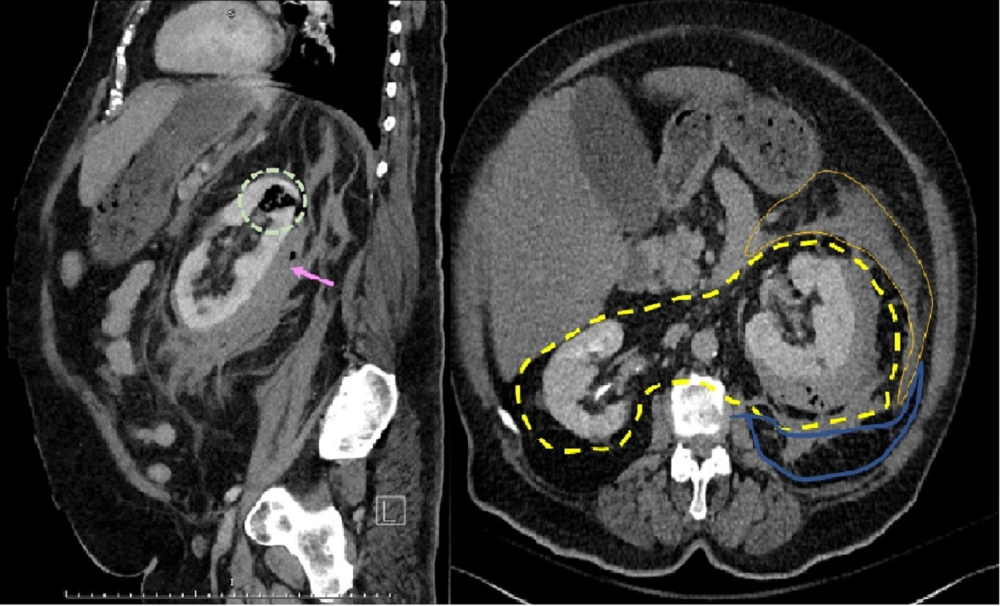
© Chẩn Đoán Hình Ảnh Xray.vn
II. Khoang sau phúc mạc
– Giới hạn giải phẫu: Khoang sau phúc mạc nằm giữa phúc mạc thành sau ở phía trước và mạc ngang ở phía sau, trải dài từ cơ hoành đến eo trên tiểu khung:
+ Bờ trên: mặt dưới cơ hoành, nơi các lá cân nối thông với khoang dưới phúc mạc hoành và trung thất sau qua các khe cơ hoành.
+ Bờ dưới: thông liên tục với khoang ngoài phúc mạc tiểu khung (khoang trước bàng quang, quanh trực tràng và trước xương cùng) theo lý thuyết bình diện liên cân (interfascial planes).
+ Thành bên: giới hạn bởi các dải mỡ cạnh phúc mạc (flank stripe) và lớp cơ thành bụng sau bên.
– Phân chia giải phẫu: Tổ chức thành 2 khoang bên đối xứng và 1 khoang quanh mạch máu lớn ở trung tâm, ngăn cách nhau bởi các lá mạc thận và bình diện liên cân:
+ Mỗi khoang bên gồm 3 tiểu khoang: khoang cạnh thận trước, khoang quanh thận và khoang cạnh thận sau, phân tách bởi lá trước mạc thận (cân Gerota), lá sau mạc thận (cân Zuckerkandl) và cân bên nón (lateroconal fascia).
+ Khoang quanh mạch trung tâm: bao quanh động mạch chủ bụng và tĩnh mạch chủ dưới ở đường giữa, có thể thông thương với khoang sau phúc mạc hai bên khi áp lực khí hoặc dịch tăng cao.
– Ý nghĩa trong chẩn đoán hình ảnh: Các lá cân sau phúc mạc tạo thành các bình diện tiềm tàng có thể tách lớp (bình diện sau tá tụy, sau đại tràng và bình diện kết hợp), vừa ngăn cản sự lan trực tiếp của dịch/máu ở áp lực thấp vừa đóng vai trò hành lang dẫn khí lan tỏa nhanh chóng dọc theo trục cơ thể.
1. Khoang cạnh thận trước
– Giới hạn giải phẫu: Nằm ở vùng trước nhất của khoang sau phúc mạc, trải rộng qua đường giữa từ phải sang trái:
+ Phía trước: giới hạn bởi phúc mạc thành sau, rễ mạc treo đại tràng ngang và rễ mạc treo ruột non.
+ Phía sau: giới hạn bởi lá trước mạc thận (cân Gerota) ở hai bên và mô liên kết quanh mạch lớn ở đường giữa.
+ Phía bên: giới hạn bởi cân bên nón (lateroconal fascia), ngăn cách với dải mỡ cạnh phúc mạc.
+ Phía trên và dưới: thông liên tục qua đường giữa trước cột sống; phía dưới hợp nhất với mạc sau đại tràng (cân Toldt) và mở xuống bình diện liên cân tiểu khung.
– Thành phần giải phẫu: Chứa các tạng tiêu hóa cố định thứ phát sau phúc mạc cùng hệ mạch máu – bạch huyết đi kèm:
+ Tụy: toàn bộ đầu, cổ, thân và phần lớn đuôi tụy (trừ đoạn chóp đuôi tụy nằm trong dây chằng lách – thận).
+ Tá tràng: toàn bộ đoạn sau phúc mạc gồm đoạn xuống (D2), đoạn ngang (D3) và đoạn lên (D4), ngoại trừ hành tá tràng (D1) di động trong phúc mạc.
+ Đại tràng cố định: mặt sau đại tràng lên (đại tràng phải) và đại tràng xuống (đại tràng trái) nằm sát lớp mỡ cạnh thận trước, không có phúc mạc bao phủ hoàn toàn.
+ Mạch máu và ống dẫn: đoạn cuối ống mật chủ, tĩnh mạch cửa, tĩnh mạch lách và gốc các nhánh mạch mạc treo tràng trên.
– Ý nghĩa bệnh lý và chẩn đoán hình ảnh: Là vị trí thường gặp nhất của tràn khí sau phúc mạc do nguyên nhân ống tiêu hóa, cho phép khoanh vùng tổn thương khi đọc phim:
+ Khí khu trú bên phải hoặc vùng đầu tụy – khung tá tràng gợi ý thủng tá tràng (loét hành – tá tràng D2, chấn thương vỡ D2–D3, biến chứng sau nội soi mật tụy ngược dòng) hoặc thủng đại tràng lên.
+ Khí khu trú dọc rãnh cạnh đại tràng trái gợi ý thủng đại tràng xuống do viêm túi thừa hoặc u đại tràng xâm lấn ra sau.
+ Do khoang cạnh thận trước thông thương qua đường giữa nên khí hoặc dịch tụy số lượng lớn có thể lan từ bên này sang bên đối diện mà không bị cản trở ở đường giữa.
2. Khoang cạnh thận sau
– Giới hạn giải phẫu: Là khoang nằm sau cùng của khoang sau phúc mạc, trải dọc hai bên cột sống thắt lưng và nằm sau bên cơ thắt lưng chậu cùng cơ vuông thắt lưng:
+ Phía sau: giới hạn bởi mạc ngang phủ mặt trước cơ vuông thắt lưng và cơ thắt lưng chậu.
+ Phía trước: giới hạn bởi lá sau mạc thận (cân Zuckerkandl).
+ Phía bên: giới hạn bởi cân bên nón (lateroconal fascia), nơi hợp nhất giữa lá trước và lá sau mạc thận, sau đó lớp mỡ khoang này liên tục ra phía trước thành dải mỡ cạnh phúc mạc (flank stripe) giữa mạc ngang và phúc mạc thành.
+ Phía trong: đóng kín dọc theo bờ ngoài cơ vuông thắt lưng và cơ thắt lưng chậu do mạc thận hòa lẫn vào cân cơ, ngăn cách hai bên phải và trái không thông thương trực tiếp qua đường giữa.
+ Phía trên và dưới: phía trên thu hẹp và đóng kín tại nơi mạc thận dính vào mạc cơ hoành; phía dưới mở rộng liên tục xuống bình diện liên cân tiểu khung dưới phúc mạc.
– Thành phần giải phẫu: Khoang không chứa tạng nhu mô hay ống tiêu hóa cố định, chủ yếu gồm lớp mỡ đệm dày, mô liên kết lỏng lẻo, mạch máu nhỏ và các nhánh thần kinh của đám rối thắt lưng (thần kinh chậu hạ vị, chậu bẹn, bìu đùi ngoài).
– Ý nghĩa bệnh lý và chẩn đoán hình ảnh: Vì không chứa tạng rỗng nên khí tại khoang cạnh thận sau thường bắt nguồn từ tổn thương ngoài phúc mạc tiểu khung hoặc thành bụng lan tới:
+ Khí từ thủng trực tràng ngoài phúc mạc, áp xe quanh hậu môn – trực tràng hoặc thủ thuật vùng tầng sinh môn lan ngược lên dọc theo các bình diện liên cân dưới.
+ Nhiễm trùng hoại tử thành bụng sau, áp xe cơ thắt lưng chậu, viêm cột sống đĩa đệm sinh hơi hoặc chấn thương xuyên thấu vùng lưng hông.
+ Trên phim X-quang và
3. Khoang quanh thận
– Giới hạn giải phẫu: Có hình chóp ngược đặc trưng bao bọc bởi mạc quanh thận (renal fascia), ngăn cách với khoang cạnh thận trước và sau:
+ Phía trước: giới hạn bởi lá trước mạc thận (cân Gerota).
+ Phía sau: giới hạn bởi lá sau mạc thận (cân Zuckerkandl).
+ Phía trên: hai lá mạc thận hòa lẫn vào mạc cơ hoành, riêng phía trên bên phải tạo thành vùng trần của gan (bare area of the liver) cho phép thông thương trực tiếp giữa khoang quanh thận phải và nhu mô gan.
+ Phía dưới: hai lá mạc thận hợp nhất quanh niệu quản và mạch sinh dục thành đỉnh hình nón tại hố chậu, đóng kín khoang ở áp lực thấp nhưng vẫn có thể mở ra thành bình diện liên cân dưới khi áp lực khí hoặc dịch tăng cao.
+ Phía trong: trước đây quan niệm đóng kín quanh cuống mạch thận, nhưng thực tế hai khoang quanh thận phải và trái thông thương qua đường giữa ở mặt trước động mạch chủ bụng và tĩnh mạch chủ dưới.
– Thành phần giải phẫu: Chứa thận, tuyến thượng thận (nằm trong một ngăn riêng biệt bởi lá cân mỏng phía trên thận), đoạn gần niệu quản, cuống mạch thận, hệ bạch huyết và lớp mỡ quanh thận dày đặc.
– Cấu trúc bên trong: Hệ thống vách xơ cầu nối (bridging septa của Kunin) nối bao thận với mạc thận cùng mạng lưới mạch máu – bạch huyết quanh thận phong phú tạo thành các ngăn nhỏ giúp định hướng đường lan của dịch, máu, tế bào u và khí.
– Ý nghĩa bệnh lý và chẩn đoán hình ảnh: Khoang quanh thận là nơi tích tụ khí phổ biến trong các bệnh lý nhiễm trùng đường tiết niệu trên và là trạm trung chuyển khí giữa các khoang sau phúc mạc:
+ Khí khu trú bên trong mạc thận gợi ý viêm thận bể thận sinh hơi, áp xe thận sinh khí, biến chứng sau sinh thiết thận, dẫn lưu bể thận qua da hoặc phẫu thuật thận – thượng thận.
+ Khi áp lực khí tăng cao, khí có thể bóc tách dọc theo các vách nối, xuyên qua vùng trần gan lên khoang dưới hoành phải hoặc lan qua đường giữa sang khoang quanh thận đối diện.
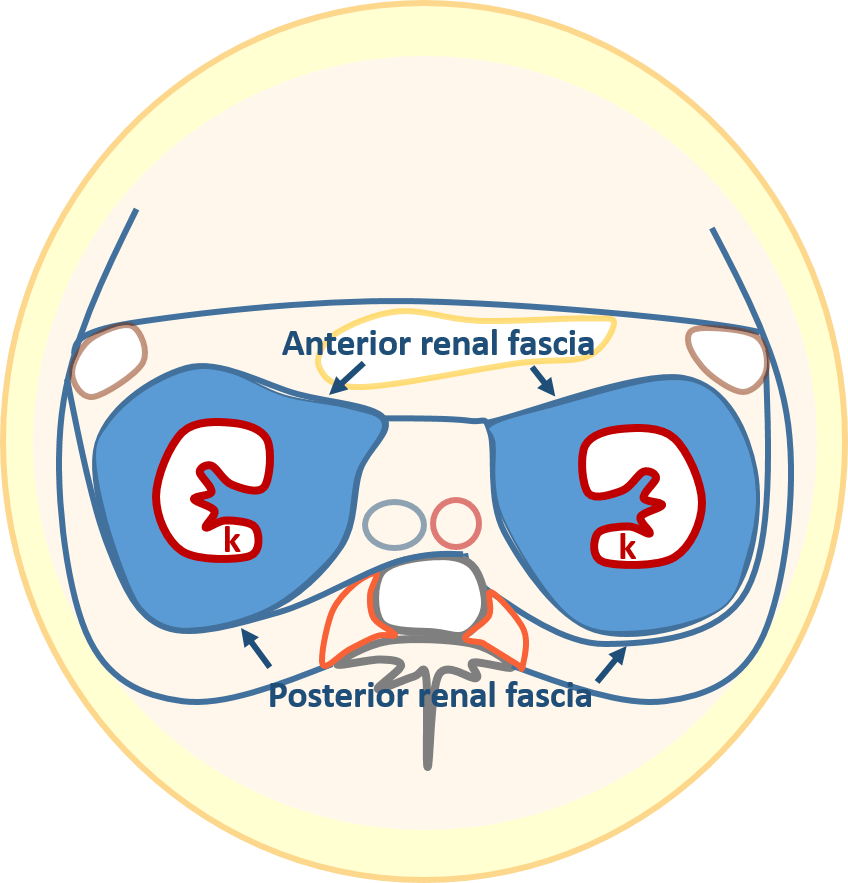
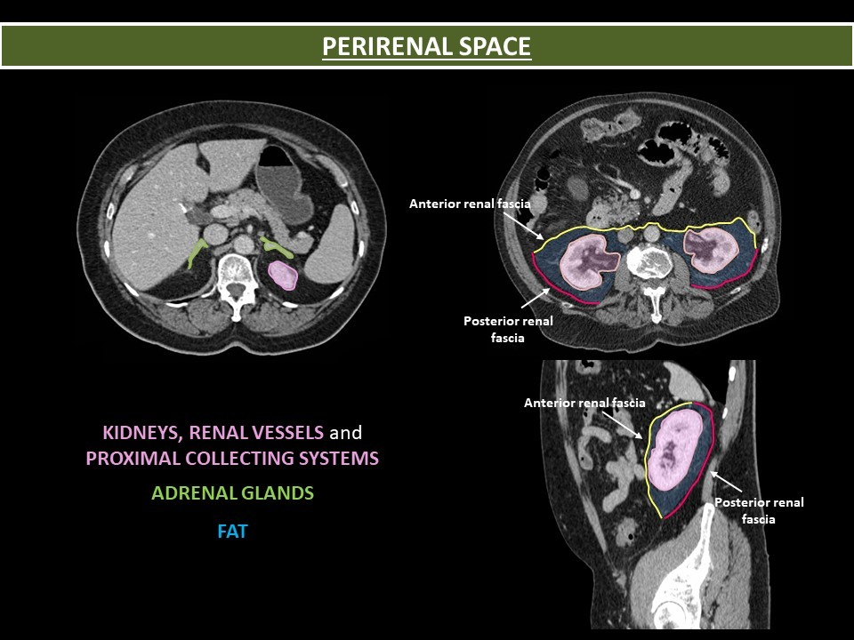
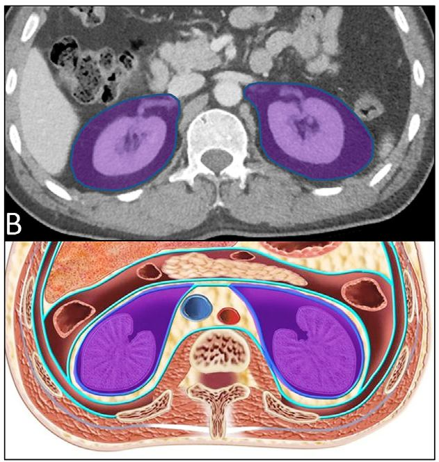
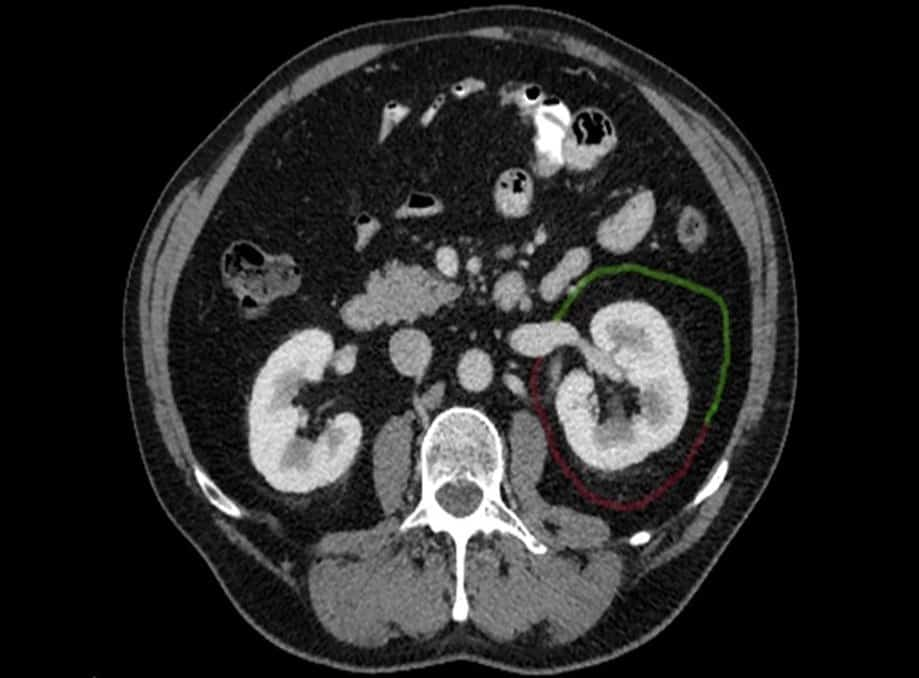
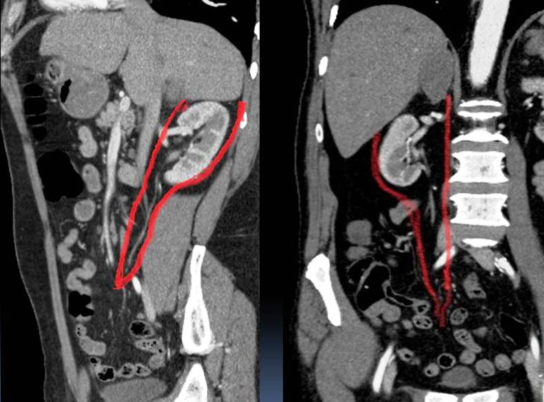
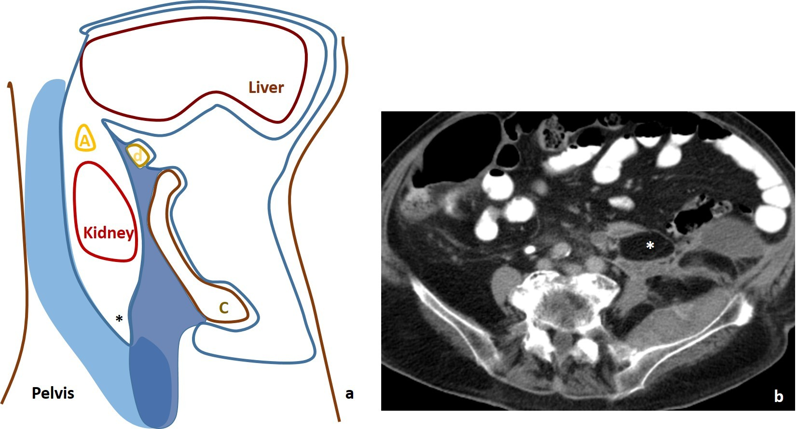
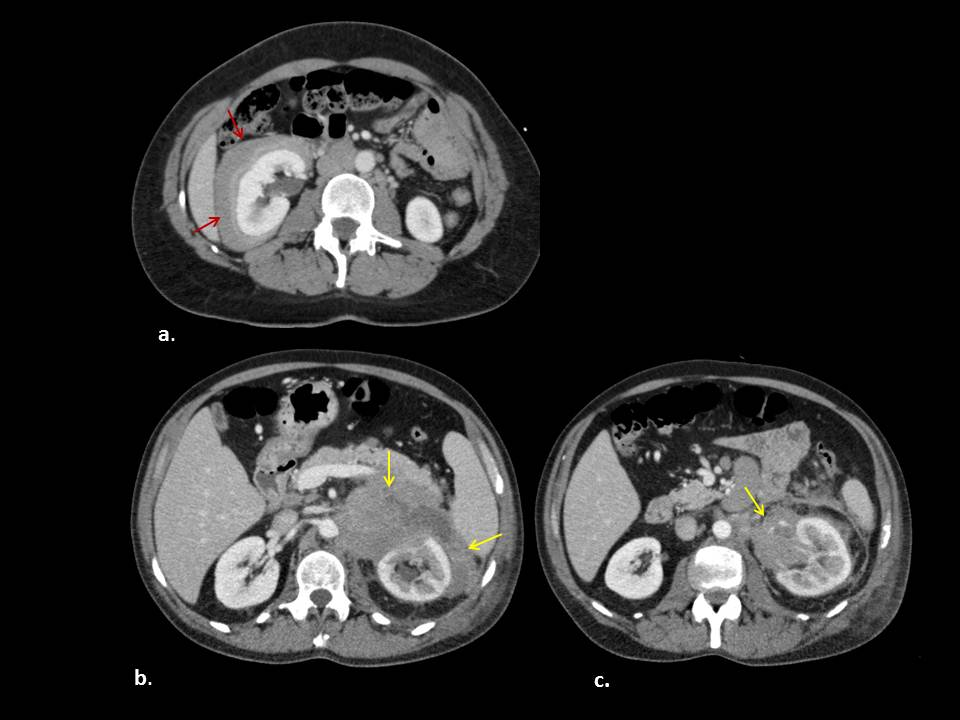
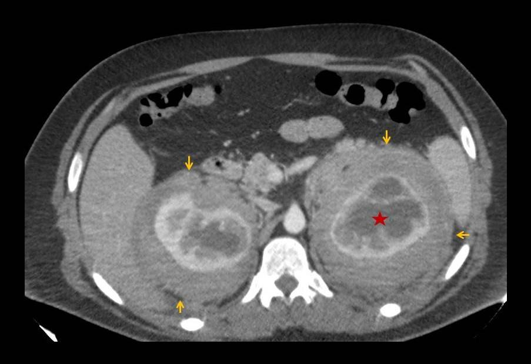
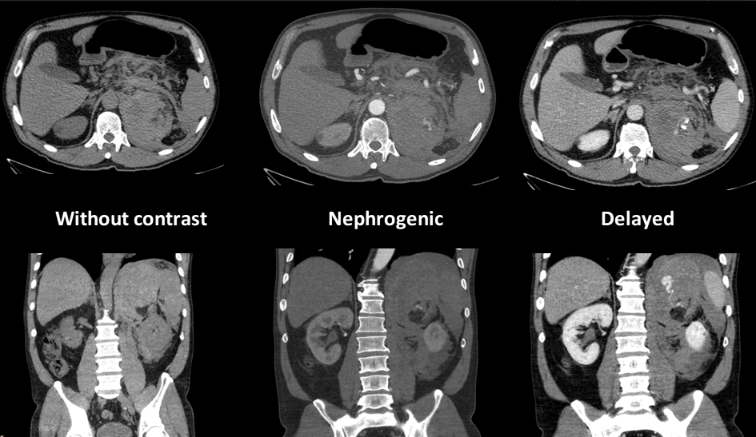
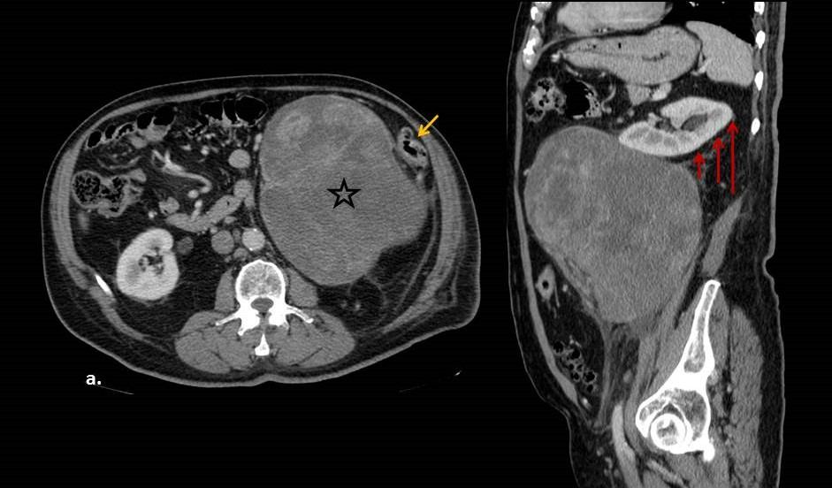
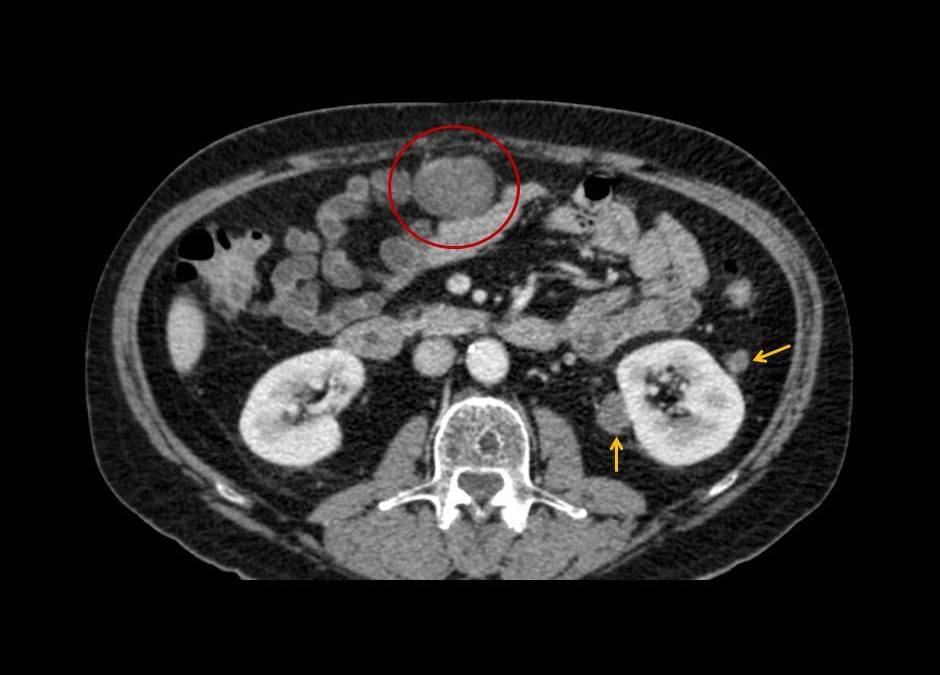
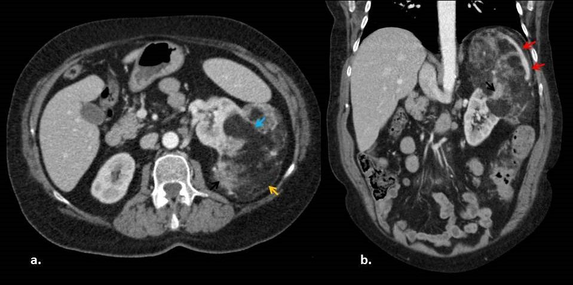
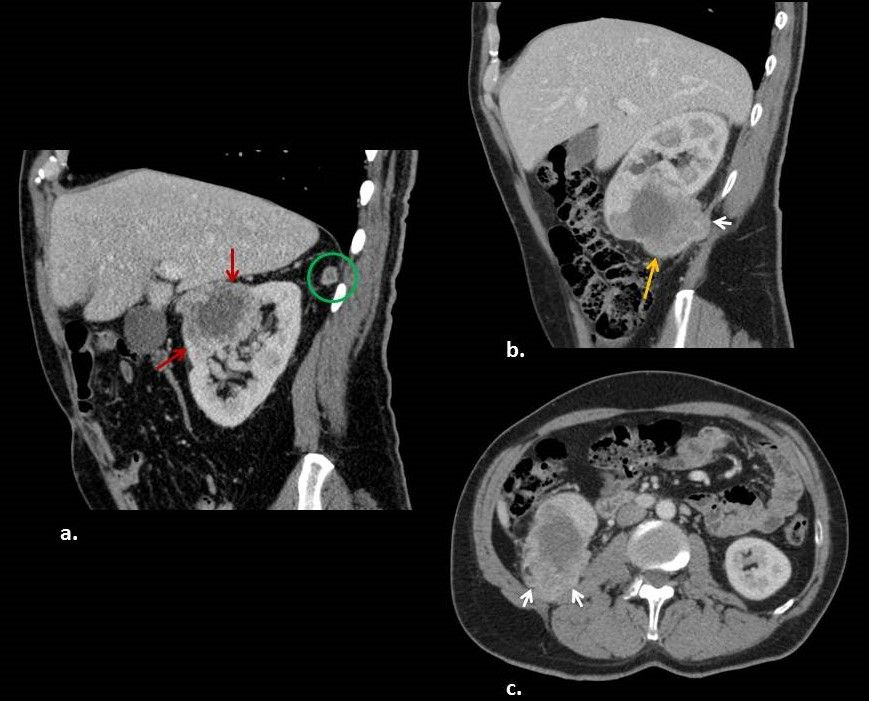
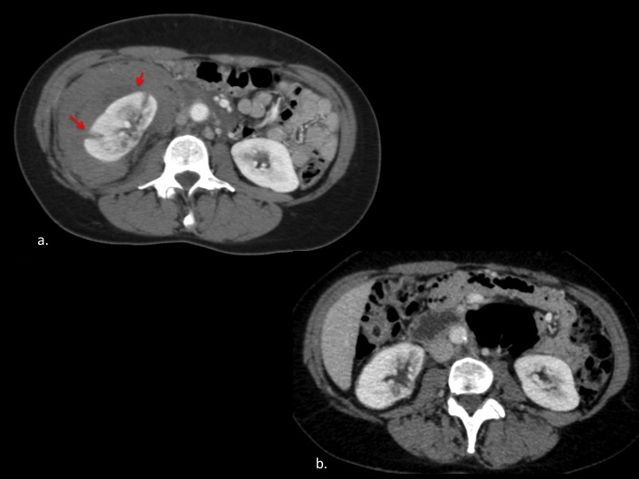
4. Khoang quanh mạch
– Giới hạn giải phẫu: Là khoang mạch máu trung tâm nằm dọc đường giữa trước cột sống thắt lưng, có hình dạng dẹt trước – sau và không có vách ngăn thực sự ở đường giữa:
+ Phía trước: giới hạn bởi mặt sau của tụy, đoạn ngang tá tràng (D3) và lá phúc mạc thành sau ở vùng dưới đại tràng ngang.
+ Phía sau: giới hạn bởi thân đốt sống thắt lưng, đĩa đệm gian đốt sống, dây chằng dọc trước và bờ trong cơ thắt lưng chậu hai bên.
+ Phía bên: giới hạn bởi bờ trong của mạc quanh thận hai bên (nơi lá trước và lá sau mạc thận hòa lẫn vào bao mạch máu lớn).
+ Phía trên và dưới: thông liên tục qua lỗ động mạch chủ cơ hoành lên trung thất sau và kéo dài xuống chỗ chia đôi động mạch chủ – chậu để thông với khoang dưới phúc mạc tiểu khung.
– Thành phần giải phẫu: Chứa động mạch chủ bụng cùng các nhánh tận/nhánh bên gốc (thân tạng, mạc treo tràng trên, mạc treo tràng dưới, động mạch thận), tĩnh mạch chủ dưới, chuỗi hạch bạch huyết quanh động – tĩnh mạch chủ, bể dưỡng chấp, đám rối thần kinh giao cảm và mô mỡ – liên kết lỏng lẻo.
– Bệnh lý hay gặp: Do tập trung mạch máu lớn và hệ bạch huyết nên khoang này thường liên quan đến các tổn thương lan tỏa dọc đường giữa hoặc rò khí/máu từ mạch máu – tạng lân cận:
+ Bệnh lý xơ viêm và u hạch: xơ hóa sau phúc mạc (bệnh Ormond), viêm quanh động mạch chủ bụng mạn tính, u lympho (lymphoma) hoặc hạch di căn tạo khối bao bọc quanh động mạch chủ nhưng thường không đẩy lệch động mạch ra trước như u nguyên phát sau phúc mạc khác.
+ Bệnh lý mạch máu cấp cứu: vỡ hoặc dọa vỡ phình động mạch chủ bụng gây tụ máu khoang quanh mạch và lan sang khoang cạnh thận/quanh thận; rò động mạch chủ – tá tràng (aortoenteric fistula) thứ phát sau đặt stent-graft hoặc ghép mạch nhân tạo gây xuất hiện bóng khí khu trú trong thành túi phình hay quanh vật liệu ghép.
– Ý nghĩa trong chẩn đoán hình ảnh: Khí xuất hiện trong khoang quanh mạch có nguy cơ rất cao bóc tách nhanh qua lỗ động mạch chủ cơ hoành gây tràn khí trung thất, đồng thời đòi hỏi loại trừ ngay biến chứng nhiễm trùng mảnh ghép mạch máu hoặc thủng đoạn D3 tá tràng vào đường giữa.
III. Chẩn đoán x-quang
– Cơ chế tạo hình ảnh: Khí tự do bóc tách dọc theo các mặt phẳng cân mạc và lớp mỡ sau phúc mạc tạo nên các dải sáng dạng vệt, bọt nhỏ hoặc viền khí bao quanh các tạng cố định, khác với mức nước – hơi hoặc liềm hơi di động tự do trong ổ phúc mạc.
– Đặc điểm hình ảnh: Tùy tiểu khoang chứa khí, phim X-quang bụng không chuẩn bị bộc lộ các dấu hiệu kinh điển đặc trưng:
+ Dấu hiệu viền sáng quanh thận và tuyến thượng thận: khí tích tụ trong khoang quanh thận tạo dải thấu quang sắc nét ôm lấy bờ thận, cực trên thận và tuyến thượng thận (giúp phân biệt với khí trong phúc mạc hiếm khi bao trọn cực trên thận).
+ Dấu hiệu nổi rõ bờ cơ thắt lưng chậu: khí bóc tách dọc khoang cạnh thận sau làm tăng tương phản, vẽ rõ đường bờ ngoài cơ thắt lưng chậu hai bên hoặc một bên.
+ Dấu hiệu khí bao quanh tụy, động mạch chủ và các đoạn ruột sau phúc mạc: các vệt sáng nhỏ hình bọt hoặc dải khí viền dọc khung tá tràng (D2–D4), bờ đại tràng lên, đại tràng xuống, trực tràng hoặc chồng lấp vùng cột sống thắt lưng tương ứng vị trí động mạch chủ bụng và tụy.
+ Dấu hiệu khí dưới hoành cố định và tràn khí trung thất: khí lan qua các khe cơ hoành tạo các vệt sáng dưới vòm hoành không thay đổi vị trí theo tư thế chụp, kèm dải khí dọc bờ trung thất sau hoặc tràn khí dưới da vùng thắt lưng – bẹn.
– Phân biệt: Cần đối chiếu kỹ với tràn khí ổ phúc mạc tự do và khí trong lòng ống tiêu hóa:
+ Tràn khí ổ phúc mạc tự do: tạo liềm hơi dưới vòm hoành di động rõ khi đổi tư thế nằm nghiêng trái, kèm dấu hiệu Rigler (thấy rõ cả hai mặt thành ruột) hoặc dấu hiệu dây chằng liềm, không viền quanh bờ thận hay cơ thắt lưng chậu.
+ Khí trong lòng ruột hoặc bã thức ăn/phân trong đại tràng: tạo hình lốm đốm tổ ong nằm đúng theo giải phẫu lòng đại tràng lên/xuống và không lan dọc theo bờ ngoài cơ thắt lưng chậu hay cực trên thận.
– Cạm bẫy và giới hạn: Độ nhạy của X-quang bụng quy ước thấp trong phát hiện lượng khí ít sau phúc mạc, đồng thời các vệt khí nhỏ dễ bị chồng lấp bởi hơi trong đại tràng hoặc nhầm với lớp mỡ quanh thận bình thường ở bệnh nhân béo phì, nên cần chỉ định cắt lớp vi tính ngay khi nghi ngờ lâm sàng.


IV. Chẩn đoán CLVT
– Kỹ thuật thăm khám: Chụp cắt lớp vi tính đa dãy đầu thu (MDCT) từ vòm hoành đến khớp mu giúp xác định chính xác tràn khí sau phúc mạc và truy tìm nguyên nhân:
+ Khảo sát trên cửa sổ phổi hoặc cửa sổ rộng (WL khoảng -400 đến -600 HU, WW 1500–2000 HU) để phát hiện các bóng khí cực nhỏ (tỷ trọng khoảng -1000 HU) dễ bị bỏ sót trên cửa sổ mô mềm thông thường.
+ Tiêm thuốc cản quang đường tĩnh mạch thì tĩnh mạch cửa đánh giá mất liên tục thành tạng, áp xe và hoại tử nhu mô; kết hợp thuốc cản quang đường uống hoặc thụt trực tràng tan trong nước trong trường hợp nghi ngờ thủng thực quản bụng, tá tràng sau ERCP hoặc thủng trực tràng kín đáo.
+ Tái tạo đa mặt phẳng (MPR) đứng ngang và đứng dọc theo trục động mạch chủ, khung tá tràng và rãnh cạnh đại tràng để lần theo đường lan của khí.
– Đặc điểm hình ảnh cắt lớp vi tính: Cắt lớp vi tính có độ nhạy gần 100% trong phát hiện các bóng khí nhỏ nằm sau phúc mạc và định khu chính xác từng tiểu khoang:
+ Khí khoang cạnh thận trước: các bóng khí nhỏ tập trung quanh đầu tụy, khung tá tràng (D2–D4), mặt sau đại tràng lên hoặc đại tràng xuống, kèm thâm nhiễm mỡ tại chỗ, dày thành ruột khu trú hoặc mất liên tục thành tạng tại ổ thủng.
+ Khí khoang quanh thận: khí phân bố bên trong mạc quanh thận, bóc tách dọc các vách xơ cầu nối, ôm lấy vỏ thận, tuyến thượng thận và cuống mạch thận; gặp trong viêm thận bể thận sinh hơi, áp xe thận hoặc biến chứng can thiệp tiết niệu.
+ Khí khoang cạnh thận sau: các dải khí chạy dọc mặt trước cơ vuông thắt lưng, bờ ngoài cơ thắt lưng chậu và bóc tách ra trước vào dải mỡ cạnh phúc mạc; thường bắt nguồn từ thủng trực tràng ngoài phúc mạc, áp xe quanh hậu môn hoặc nhiễm trùng hoại tử vùng lưng hông.
+ Khí khoang quanh mạch và đường lan trục dọc: khí bao quanh động mạch chủ bụng và tĩnh mạch chủ dưới ở đường giữa, có thể bóc tách lên trung thất sau qua khe cơ hoành gây tràn khí trung thất, hoặc lan xuống khoang ngoài phúc mạc tiểu khung, ống bẹn và bìu.
– Chiến lược truy tìm vị trí tổn thương nguyên phát: Nguyên tắc thực hành cốt lõi là lần theo vùng tập trung mật độ bóng khí dày đặc nhất kết hợp ổ tụ dịch, thâm nhiễm mỡ nặng nhất hoặc thoát thuốc cản quang ngoài lòng ống tiêu hóa để xác định lỗ thủng hoặc ổ nhiễm trùng khởi phát.
– Phân biệt: Phân định rõ tràn khí sau phúc mạc với khí ở các khoang lân cận để tránh chẩn đoán nhầm chỉ định phẫu thuật:
+ Tràn khí ổ phúc mạc tự do: khí tập trung ở vùng cao phía trước dưới thành bụng trước (tư thế nằm ngửa), quanh dây chằng liềm, rãnh gan – thận, rãnh cạnh đại tràng ngoài phúc mạc và di chuyển theo tư thế, không bao bọc mặt sau tụy hay cơ thắt lưng chậu.
+ Khí trong thành ruột (pneumatosis intestinalis): các bóng khí xếp thành chuỗi song song hoặc vòng cung nằm gọn trong lớp dưới niêm mạc hay dưới thanh mạc thành ruột, không tự do trong mô mỡ sau phúc mạc.
+ Túi thừa tá tràng hoặc đại tràng: cấu trúc chứa khí có cổ thông trực tiếp với lòng ống tiêu hóa, thành mỏng đều và không kèm thâm nhiễm mỡ hay tụ dịch phản ứng xung quanh.
– Cạm bẫy: Hai tình huống dễ dẫn đến sai sót trên thực hành cắt lớp vi tính:
+ Hạt mỡ tỷ trọng âm sâu (-50 đến -120 HU) xen kẽ các dải xơ quanh thận có thể giả hình bóng khí nhỏ trên cửa sổ nhu mô chuẩn, cần đo tỷ trọng ROI (khí thật < -800 HU) và kiểm tra trên cửa sổ phổi.
+ Tràn khí sau phúc mạc lượng lớn có thể vỡ thứ phát qua lá phúc mạc thành sau gây tràn khí ổ phúc mạc phối hợp, dễ làm bác sĩ chỉ tập trung tìm thủng tạng trong phúc mạc mà bỏ sót tổn thương ở tá tràng D2–D4 hoặc trực tràng ngoài phúc mạc.
– Đường lan qua cơ hoành lên trung thất: Khí sau phúc mạc có thể bóc tách qua các khe và lỗ cơ hoành (chủ yếu qua lỗ động mạch chủ, lỗ thực quản và khe sau phúc mạc bên) để đi thẳng vào trung thất sau:
+ Trên cắt lớp vi tính, khí tạo thành các dải sáng chạy dọc bao động mạch chủ xuống, quanh thực quản và khoang trước cột sống ngực, từ đó có thể tiếp tục lan lên vùng cổ gây tràn khí dưới da vùng cổ – thượng đòn hoặc vỡ vào khoang màng phổi gây tràn khí màng phổi thứ phát.
+ Đây là con đường giải áp hai chiều nên khi gặp tràn khí trung thất kết hợp tràn khí sau phúc mạc, cần đối chiếu bệnh sử và tìm ổ tổn thương nguyên phát để phân biệt khí từ khoang sau phúc mạc lan lên (thủng tá tràng, đại trực tràng, sau ERCP) với khí từ trung thất lan xuống (hội chứng Boerhaave, vỡ phế nang).
=> Case lâm sàng 1: khí quanh tụy – ĐM chủ – thận – cơ thắt lưng trái
=> Case lâm sàng 2: khí quanh trực tràng
=> Case lâm sàng 3: khí quanh thận
=> Case lâm sàng 4:


=> Case lâm sàng 5:


V. Tiên lượng & Điều trị
* Tiên lượng
– Diễn tiến và yếu tố tiên lượng hình ảnh: Tiên lượng phụ thuộc trực tiếp vào nguyên nhân gây tràn khí, thời gian từ lúc khởi phát đến khi chẩn đoán và tình trạng nhiễm trùng huyết kèm theo, được phân tầng dựa trên cắt lớp vi tính theo khuyến cáo của Hiệp hội Phẫu thuật Cấp cứu Thế giới (WSES 2020–2023):
+ Trường hợp lành tính (tràn khí sau nội soi mật tụy ngược dòng hoặc nội soi đại tràng không kèm thoát thuốc cản quang ngoài lòng ruột và không tụ dịch): tỷ lệ tự hấp thu khí cao và tiên lượng tốt nếu phát hiện sớm.
+ Trường hợp nguy cơ tử vong cao (tỷ lệ tử vong lên tới 20–40% khi chẩn đoán muộn): thủng tá tràng do chấn thương kín, thủng đại tràng, viêm tụy cấp hoại tử nhiễm trùng, viêm thận bể thận sinh hơi lan tỏa (độ III–IV theo phân loại Huang và Tseng) hoặc rò động mạch chủ – tá tràng.
+ Dấu hiệu tiên lượng nặng trên cắt lớp vi tính: thoát thuốc cản quang ngoài lòng ống tiêu hóa, ổ tụ dịch lớn không đồng nhất có mức khí – dịch (áp xe), hoại tử thành ruột, khí lan rộng đa khoang kèm tràn khí ổ phúc mạc phối hợp hoặc huyết khối tĩnh mạch cửa – mạc treo.
* Nguyên tắc điều trị
– Chiến lược xử trí cá thể hóa: Quyết định điều trị bảo tồn, can thiệp tối thiểu hay phẫu thuật cấp cứu dựa trên huyết động, mức độ viêm phúc mạc và nguyên nhân xác định trên cắt lớp vi tính theo hướng dẫn của Hiệp hội Phẫu thuật Cấp cứu Thế giới (WSES 2020–2023) và Hiệp hội Tiết niệu Châu Âu (EAU 2024):
+ Điều trị bảo tồn (nhịn ăn, nuôi dưỡng tĩnh mạch, đặt ống thông mũi dạ dày giảm áp, kháng sinh phổ rộng): chỉ định cho thủng kín sau nội soi mật tụy ngược dòng (tương ứng Stapfer typ III–IV) hoặc sau nội soi đại tràng ở bệnh nhân huyết động ổn định, không có dấu hiệu viêm phúc mạc, không thoát thuốc cản quang ngoài lòng ruột và không tụ dịch ổ lớn trên cắt lớp vi tính.
+ Can thiệp điện quang tối thiểu: dẫn lưu ổ áp xe khoang sau phúc mạc hoặc dẫn lưu bể thận qua da (nephrostomy) kết hợp kháng sinh toàn thân là lựa chọn ưu tiên hàng đầu trong áp xe cơ thắt lưng chậu, ổ tụ dịch nhiễm trùng khu trú sau viêm tụy hoại tử và viêm thận bể thận sinh hơi (đặc biệt độ I–IIIa theo Huang và Tseng).
+ Phẫu thuật cấp cứu: bắt buộc khi bệnh nhân huyết động không ổn định, có dấu hiệu viêm phúc mạc toàn thể, thủng tá tràng lớn sau nội soi (Stapfer typ I–II kèm dịch tự do), vỡ tá tràng do chấn thương, thủng đại trực tràng, hoại tử lan rộng sau phúc mạc hoặc thất bại với điều trị bảo tồn và dẫn lưu qua da.
* Vai trò CĐHA
– Hướng dẫn điều trị và theo dõi: Chẩn đoán hình ảnh giữ vai trò trung tâm trong lựa chọn phương thức can thiệp, thực hiện thủ thuật dẫn lưu và theo dõi diễn tiến sau xử trí:
+ Đánh giá trước can thiệp: xác định cửa sổ tiếp cận an toàn (tránh quai ruột, mạch máu lớn và khoang màng phổi) để đặt ống dẫn lưu qua da dưới hướng dẫn cắt lớp vi tính hoặc siêu âm, đồng thời lập bản đồ tổn thương cho phẫu thuật viên.
+ Theo dõi đáp ứng và phát hiện biến chứng: chụp cắt lớp vi tính kiểm tra khi bệnh nhân sốt kéo dài, tăng bạch cầu hoặc đau tăng sau điều trị bảo tồn để phát hiện sớm ổ áp xe tồn dư, rò tiêu hóa mới hình thành, tắc/tuột ống dẫn lưu hoặc hoại tử lan rộng cần chuyển sang phẫu thuật.
Tài liệu tham khảo
* Traumatic Retroperitoneal Injuries: Review of Multidetector CT Findings – Kevin P. Daly, MD, Christopher P. Ho, MD, D. Laurie Persson, BA
* Imaging of Abnormal Air in the Abdomen and Pelvis – Shobhit Sharma,Jonathan McDougal,Tarun Pandey,Kedar Jambhekar,Roopa Ram
* Pneumoperitoneum Imaging – Ali Nawaz Khan, MBBS, FRCS, FRCP, FRCR; Chief Editor: Eugene C Lin, MD
* Pneumomediastinum, Pneumoretroperitoneum, Pneumoperitoneum and Subcutaneous Emphysema Secondary to a Penetrating Anal Injury – Yu-Ting Hsiao
* Pneumoretroperitoneum, Pneumomediastinum, Pneumothorax, and Subcutaneous Emphysema after Diagnostic Colonoscopy – Hee Sung Lee
* Pneumoretroperitoneum Associated with “Dirty Mass”: An Unusual Case of Rectal Perforation – Pasquale Liguori
* Massive pneumoretroperitoneum arising from emphysematous cholecystitis: a case report and the literature review – Yasumichi Yagi
* Extraperitoneal air: Tracking the source on MDCT in emergency – K. Saggar, A. Ahluwalia, C. Kakkar
* Perirenal rindlike lesions. Radiological approach – M.Corral, E. Girela Baena, G. C. Fernández-Pérez
* Ectopic gas – S. G. Rizzo, M. Luque, M. ÁLVAREZ GARCÍA, M. Hernandez Herrero, J. Gomez Corral, M. Alonso, S. Marzoa Ruiz, M. Fajardo, M. Mendo; Valladolid/ES
* Track the gas to find the hole – localizing the perforation site in CT – A. S. Linhares Moreira
* Extraperitoneal Space: Anatomic and Radiologic Overview – M. Horta, N. Neto, C. Couceiro, L. P. Martins; Lisbon/PT
* Abdominal air… is it in the right or in the wrong place? – M. Drake Perez
* Direct Retroperitoneal Extension from Diseases of Peritoneal Organs – Y. Lim
* Etiology of extraluminal gas in plain abdominal radiography – C. P. Fernandez Ruiz
* Retroperitoneal necroses: a challenge for the radiologist – G. Columbano
* Transdiaphragmatic decompression pathways of pneumomediastinum and pneumoretroperitoneum – J. Isogai, J. Kaneko, S. Maejima; Hasuda/JP